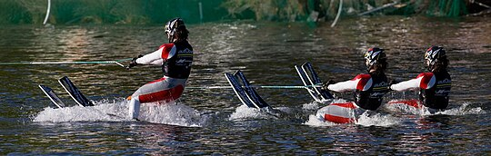
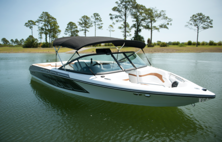

Water skiing (also waterskiing or water-skiing) is a surface water sport in which an individual is pulled behind a boat or a cable ski installation over a body of water, skimming the surface on two skis or one ski. The sport requires sufficient area on a stretch of water, one or two skis, a tow boat with tow rope, two or three people (depending on local boating laws),[1] and a personal flotation device. In addition, the skier must have adequate upper and lower body strength, muscular endurance, and good balance.
Water skiers can start their ski set in one of two ways: wet is the most common, but dry is possible. Water skiing typically begins with a deep-water start. The skier enters the water with their skis on or they jump in without the skis on their feet, having the skis floated to them, and put them on while in the water. Most times it can be easier to put the skis on when they are wet. Once the skier has their skis on they will be thrown a tow rope from the boat, which they position between their skis or, if on only one ski, to the left if right foot forward and to the right if left foot forward. In the deep-water start, the skier crouches down in the water while holding onto the ski rope; they are in a cannonball position with their legs tucked into their chest, with skis pointing towards the sky and approximately 30 cm (0.98 ft) of the ski out of the water. The skier can also perform a "dry start" by standing on the shore or a pier; however, this type of entry is recommended for professionals only. When the skier is ready (usually acknowledged by them yelling "in gear,": followed by "hit it"), the driver accelerates the boat. As the boat accelerates and takes up the slack on the rope, the skier allows the boat to pull them out of the water by applying some muscle strength to get into an upright body position. By leaning back and keeping the legs slightly bent, the skis will eventually plane out and the skier will start to glide over the water. The skier turns by shifting weight left or right. The skier's body weight should be balanced between the balls of the feet and the heels. While being towed, the skier's arms should be relaxed but still fully extended so as to reduce stress on the arms. The handle can be held vertically or horizontally, depending on whichever position is more comfortable for the skier. In addition to the driver and the skier, a third person known as the spotter or the observer should be present. The spotter's job is to watch the skier and inform the driver if the skier falls. The spotter usually sits in a chair on the boat facing backwards to see the skier. The skier and the boat's occupants communicate using hand signals
img>Water skiing can take place on any type of water – such as a river, lake, or ocean – but calmer waters are ideal for recreational skiing. There should be a 60-metre-wide (200 ft) skiing space and the water should be at least 1.5 to 1.8 metres (5 to 6 ft) deep. There must be enough space for the water skier to safely "get up", or successfully be in the upright skiing position. Skiers and their boat drivers must also have sufficient room to avoid hazards.Most Competitive skiers ski on man made ski lakes.
Younger skiers generally start out on children's skis, which consist of two skis tied together at their back and front. These connections mean that less strength is necessary for the child to keep the skis together. Sometimes these skis can come with a handle to help balance the skier as well.[6] Children's skis are short – usually 110–150 centimetres (45–60 in) long[6] – reflecting the skier's smaller size. Once a person is strong enough to hold the skis together themselves there are various options depending upon their skill level and weight. Water skiers can use two skis (one on each foot, also called "combo skiing"[7]) or one ski (dominant foot in front of the other foot,[8] also called "slalom skiing"[7]). Generally the heavier the person, the bigger the skis will be. Length will also vary based on the type of water skiing being performed; jump skis, for example, are longer than skis used in regular straight-line recreational skiing or competitive slalom and trick skiing. A trick ski is around 40 inches long and wider than combo skis. Again the skier rides it with his or her dominant foot in front. It has no fins which allows for spins to be performed.
Competition skiing uses specifically designed towboats. Most towboats have a very small hull and a flat bottom to minimize wake. A true tournament ski boat will have a direct drive motor shaft that centers the weight in the boat for an optimal wake shape. Permitted towboats used for tournament water skiing are the MasterCraft ProStar 197, MasterCraft ProStar 190, Ski Nautique 200, Malibu Response TXi, and Centurion Carbon Pro.[9] These boats have ability to pull skiers for trick skiing, jumping, and slalom.[10] Recreational boats can serve as water skiing platforms as well as other purposes such as cruising and fishing. Popular boat types include bowriders, deckboats, cuddy cabins, and jetboats.[11] The towboat must be capable of maintaining the proper speed. Speeds vary with the skier's weight, experience level, comfort level, and type of skiing.[12] For example, a child on two skis would require speeds of 21–26 km/h (13–16 mph), whereas an adult on one ski might require as high as 58 km/h (36 mph). Barefoot skiing requires speeds of approximately 72 km/h (45 mph; 39 kn). Competition speeds have a wide range: as slow as 22 km/h (14 mph; 12 kn) up to 58 km/h (36 mph; 31 kn) for slalom water skiing, and approaching 190 km/h (120 mph; 100 kn) in water ski racing.[13] The boat must be equipped with a ski rope and handle. The tow rope must be sufficiently long for maneuvering, with a recommended length of 23 metres (75 ft)[14] (within tolerance[15]) although length varies widely depending on the type of water skiing and the skier's skill level. Competition requirements on rope construction have changed over the years, from "quarter-inch polypropylene rope" in 1992[16] to the 2003 flexibility as long as the same specification is used "for the entire event."[17] The rope and handle are anchored to the boat and played out at the stern. This anchor point on a recreation boat is commonly a tow ring or cleat, mounted on the boat's stern.[citation needed] For more dedicated skiers, a metal ski pylon is placed in the center of the boat in front of the engine to connect the skier. This pylon must be mounted securely, since a skilled slalom skier can put a considerable amount of tension on the ski rope and the pylon.
img>Water skiing was invented in 1922 when Ralph Samuelson used a pair of boards as skis and a clothesline as a towrope on Lake Pepin in Lake City, Minnesota.[22] Samuelson experimented with different positions on the skis for several days until 2 July 1923. Samuelson discovered that leaning backwards in the water with ski tips up and poking out of the water at the tip was the optimal method. His brother Ben towed him and they reached a speed of 32 kilometres per hour (20 mph).[23] Samuelson spent 15 years performing shows and teaching water skiing to people in the United States. Samuelson went through several iterations of equipment in his quest to ski on water. His first equipment consisted of barrel staves for skis.[23] He later tried snow skis,[23] but finally fabricated his own design out of lumber with bindings made of strips of leather. The ski rope was made from a long window sash cord.[23] Samuelson never patented any of his ski equipment. The first patent for water skis was issued to Fred Waller, of Huntington, NY, on 27 October 1925, for skis he developed independently and marketed as "Dolphin Akwa-Skees." Waller's skis were constructed of kiln-dried mahogany, as were some boats at that time. Jack Andresen patented the first trick ski, a shorter, fin-less water ski, in 1940.